Aktuálna ponuka
Nehnuteľnosti, ktoré ponúkam
24 nehnuteľností na predaj a prenájom. Vyberte typ, alebo napíšte lokalitu.
24 z 24 ponúk
 PozemokNové9
25 500 €Exkluzívne na predaj Investičný pozemok v obci Pusté Čemerné
Pusté Čemerné
3940 m²
Mega Realitná kancelária ponúka exkluzívne na predaj investičný pozemok o výmere 3940 m² v obci Pusté Čemerné, okres Vranov nad Topľou. Táto…
PozemokNové9
25 500 €Exkluzívne na predaj Investičný pozemok v obci Pusté Čemerné
Pusté Čemerné
3940 m²
Mega Realitná kancelária ponúka exkluzívne na predaj investičný pozemok o výmere 3940 m² v obci Pusté Čemerné, okres Vranov nad Topľou. Táto…
 Rodinné domy7
38 000 €Na predaj chata s vinicou a 2 pivnicami, obec Viničky-Zajačí skok, okr
Viničky
1295 m²
MEGA realitná kancelária Vám ponúka na predaj chatku s vinicou a 2 pivnicami neďaleko Grand Bari v Tokajskej oblasti v katastri obce Viničky tzv.…
Rodinné domy7
38 000 €Na predaj chata s vinicou a 2 pivnicami, obec Viničky-Zajačí skok, okr
Viničky
1295 m²
MEGA realitná kancelária Vám ponúka na predaj chatku s vinicou a 2 pivnicami neďaleko Grand Bari v Tokajskej oblasti v katastri obce Viničky tzv.…
 Pozemok6
209 900 €NA PREDAJ: Veľkorysý stavebný pozemok s výhľadom na Vranov
Vranov nad Topľou
2752 m²
MEGA Realitná kancelária ponúka na predaj jedinečný pozemok o výmere 2 752 m², situovaný v novo vznikajúcej susedskej lokalite medzi obcami Čemerné a…
Pozemok6
209 900 €NA PREDAJ: Veľkorysý stavebný pozemok s výhľadom na Vranov
Vranov nad Topľou
2752 m²
MEGA Realitná kancelária ponúka na predaj jedinečný pozemok o výmere 2 752 m², situovaný v novo vznikajúcej susedskej lokalite medzi obcami Čemerné a…
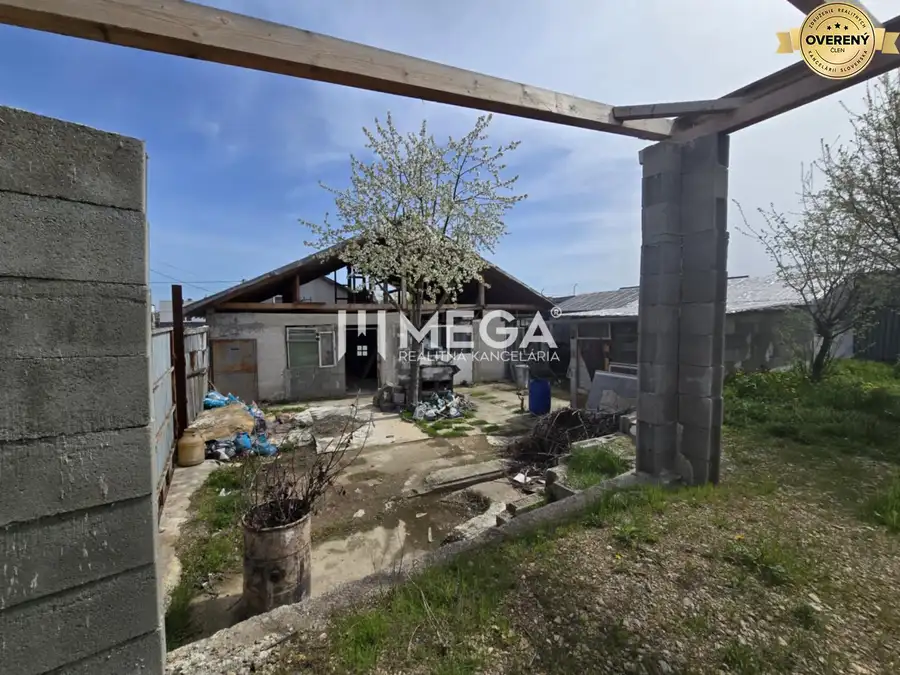
Rodinné domy9 75 000 €VÝRAZNÁ ZĽAVA rozostavaná stavba, Sokoľany - Košice okolie Okolie, Sokoľany 207 m² MEGA Realitná kancelária Vám ponúka na predaj stavebný pozemok so začatou výstavbou rodinného domu v obľúbenej a vyhľadávanej lokalite – Sokoľany,…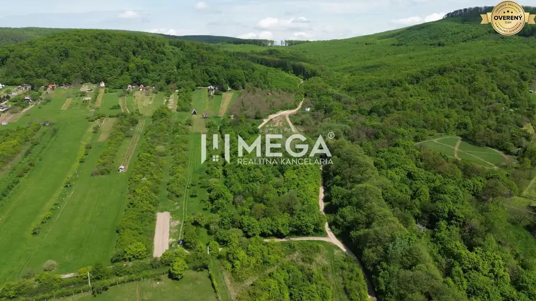
Záhrady10 92 424 €NA PREDAJ: Pozemok s potenciálom – Trnava pri Laborci Trnava pri Laborci 3851 m² MEGA Realitná kancelária pre Vás ponúka rekreačný pozemok o výmere 3851 m² v krásnej časti Trnavy pri Laborci – Parlak. Lokalita: Pozemok sa nachádza…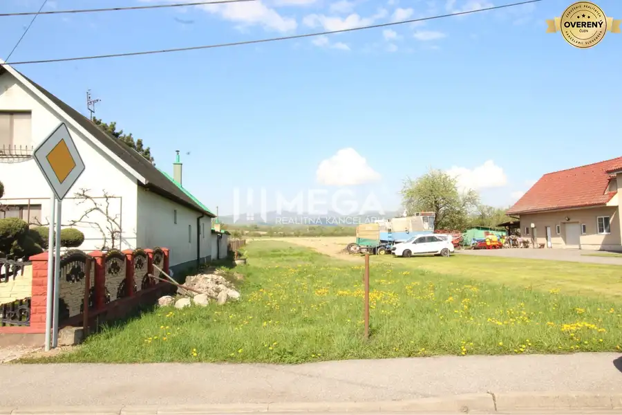
Pozemok7 40 190 €NA PREDAJ: Stavebný pozemok pri hlavnej ceste – Sačurov Sačurov 2061 m² MEGA Realitná kancelária ponúka na predaj stavebný pozemok o výmere 2061 m² v obci Sačurov, situovaný priamo pri hlavnej ceste I/79, ktorá spája…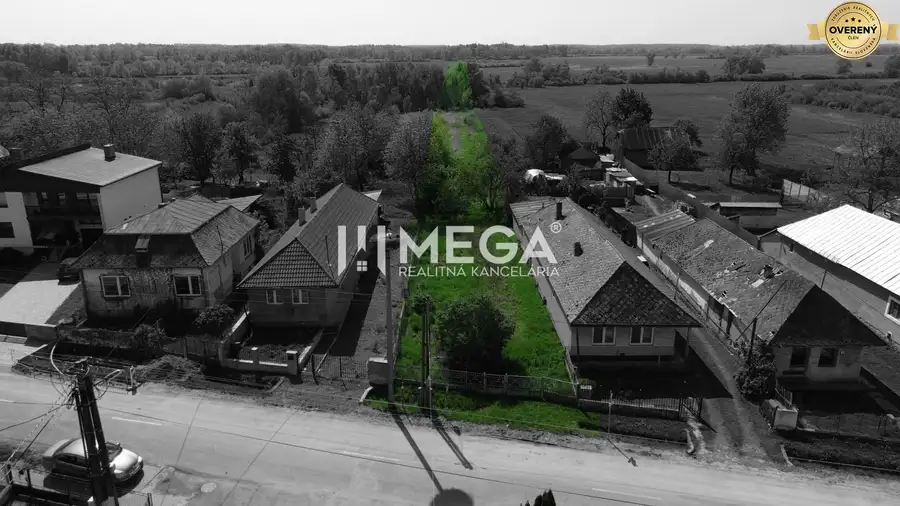
Pozemok10 30 000 €NA PREDAJ: Stavebný pozemok – Senné (okres Michalovce) Senné 2181 m² MEGA Realitná kancelária Vám ponúka na predaj stavebný pozemok o výmere 2181 m² v obci Senné, situovaný priamo pri asfaltovej ceste v smere od…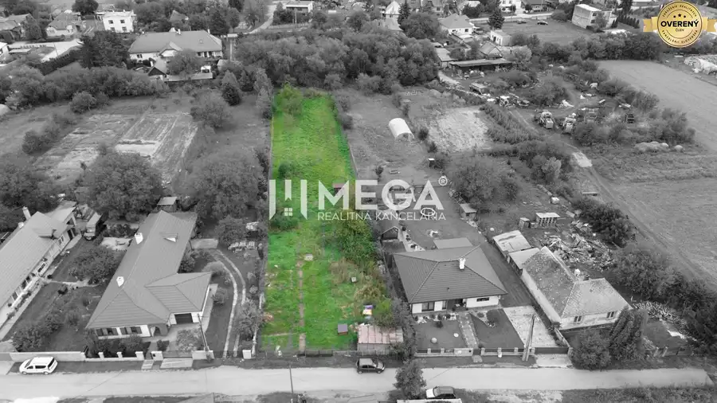
Pozemok9 130 359 €NA PREDAJ stavebný pozemok, Veľká Ida - Gomboš, KE - okolie Okolie, Veľká Ida 2287 m² MEGA realitná kancelária Vám ponúka na predaj rozsiahly a rovinatý pozemok v intraviláne obce Veľká Ida , časť Gomboš. Ponúkaná parcela sa nachádza v…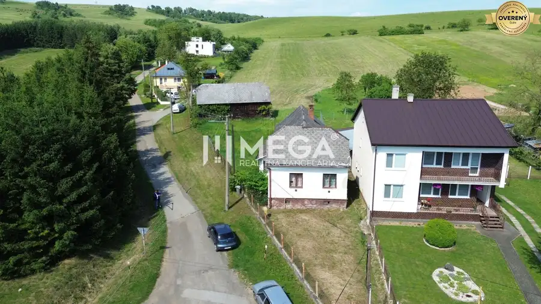
Pozemok10 70 224 €EXKLUZÍVNE NA PREDAJ: Rozsiahly pozemok, Ondavské Matiašovce Ondavské Matiašovce 5852 m² MEGA REALITNÁ KANCELÁRIA Vám exkluzívne ponúka na predaj pozemok s výnimočným investičným potenciálom nachádzajúci sa v pokojnej lokalite obce…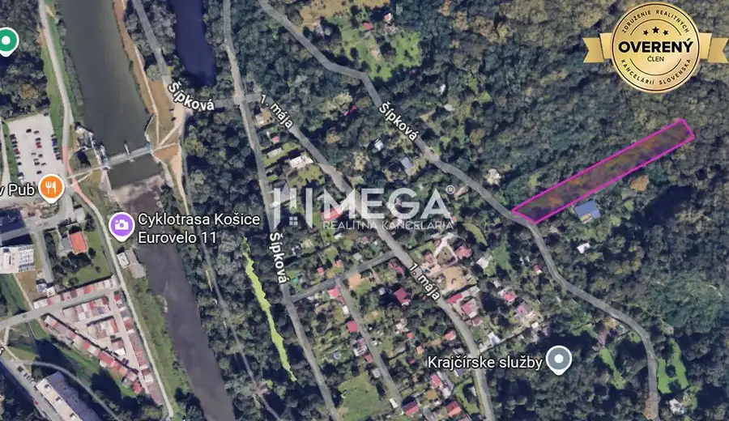
Pozemok7 49 900 €NA PREDAJ: Pozemok v tichej lokalite Košice - Krásna Košice 2289 m² MEGA Realitná kancelária Vám ponúka na predaj pozemok s rozlohou 2 289 m² v tichej lokalite mestskej časti Košice – Krásna. Parametre pozemku: -… Pozemok6
339 975 €NA PREDAJ: Pozemok na bytovú výstavbu – Mokrance
Okolie, Mokrance
3939 m²
Mega realitná kancelária predstavuje investičnú príležitosť – pozemok v Mokranciach pri Košiciach, určený na bytovú výstavbu. Lokalita: - Mokrance,…
Pozemok6
339 975 €NA PREDAJ: Pozemok na bytovú výstavbu – Mokrance
Okolie, Mokrance
3939 m²
Mega realitná kancelária predstavuje investičnú príležitosť – pozemok v Mokranciach pri Košiciach, určený na bytovú výstavbu. Lokalita: - Mokrance,…
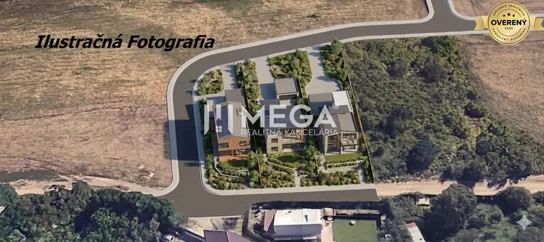
Pozemok7 155 000 €NA PREDAJ: Investičný pozemok s potenciálom pre 3 rodinné domy – Košic Košice 1961 m² Mega realitná kancelária ponúka na predaj lukratívny rovinatý pozemok v žiadanej lokalite Košice – mestská časť Krásna, v tichej a perspektívnej… Byt10
235 000 €Znížená cena Exkluzívne na predaj: 3-izbový byt 94 m² | parkovacie mie
Košice
3-izbový94 m²
Mega realitná kancelária Vám Exkluzívne ponúka na predaj priestranný 3-izbový byt po kompletnej rekonštrukcii na ulici Učňovská v mestskej časti…
Byt10
235 000 €Znížená cena Exkluzívne na predaj: 3-izbový byt 94 m² | parkovacie mie
Košice
3-izbový94 m²
Mega realitná kancelária Vám Exkluzívne ponúka na predaj priestranný 3-izbový byt po kompletnej rekonštrukcii na ulici Učňovská v mestskej časti…
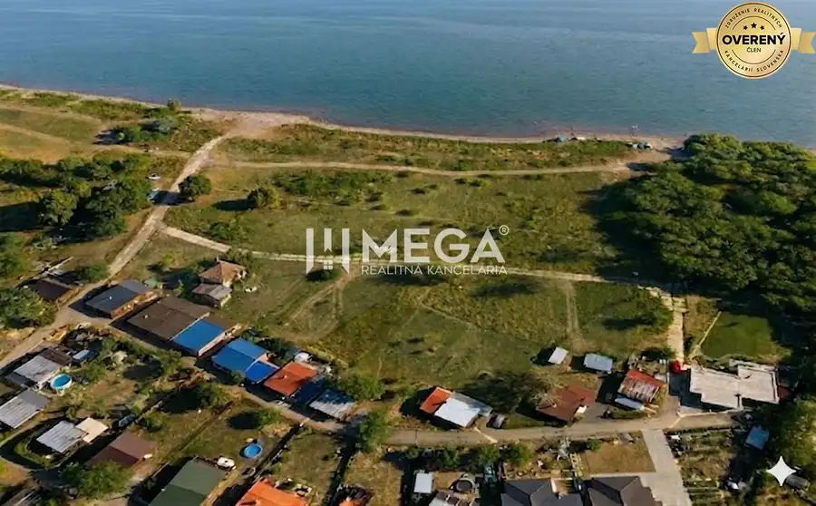
Pozemok3 150 990 €NA PREDAJ: Lukratívny pozemok priamo pri vode / Zemplínska šírava časť Vinné 1001 m² Mega realitná kancelária ponúka na predaj lukratívny pozemok v obľúbenej rekreačnej oblasti Zemplínska šírava časť Prímestská, ideálny na výstavbu…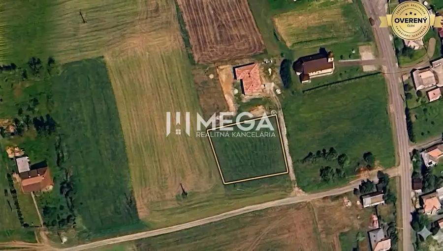
Pozemok7 39 900 €NA PREDAJ: Priestranný pozemok 2126 m² obec Víťazovce – ideálny na výs Víťazovce 2126 m² Mega realitná kancelária Vám ponúka na predaj pozemok nachádzajúci sa v obci Víťazovce, ktorý je ideálnou voľbou pre výstavbu rodinného domu v…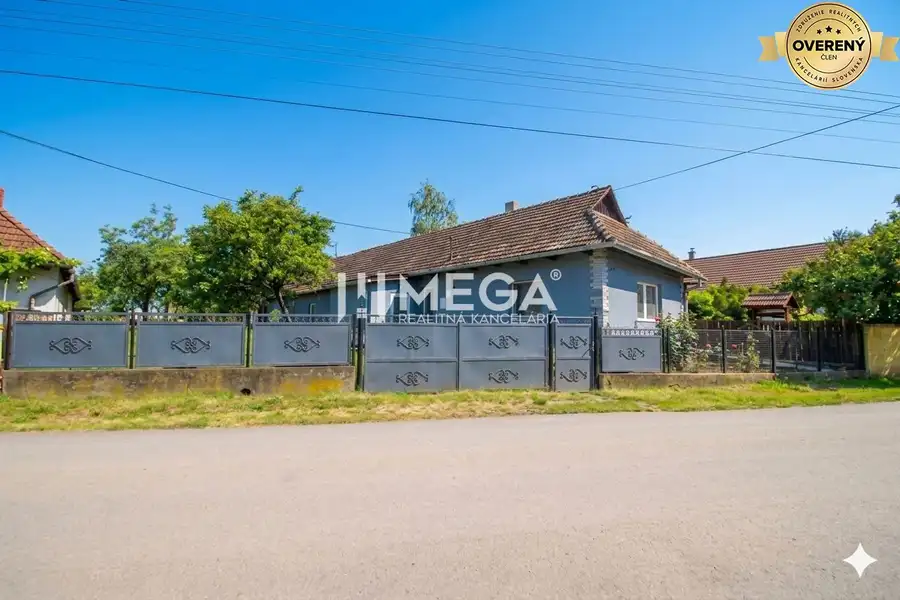
Rodinné domy10 129 900 €NA PREDAJ EXKLUZÍVNE: Rodinný dom s veľkým pozemkom - Veľká Ida Okolie, Veľká Ida 4-izbový167 m² MEGA realitná kancelária Vám exkluzívne ponúka na predaj čiastočne zrekonštruovaný 4-izbový rodinný dom nachádzajúci sa na tichej a málo…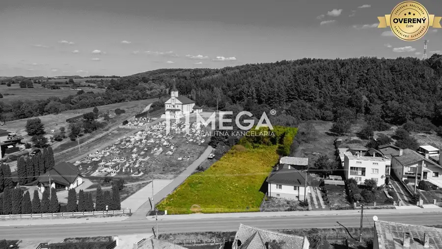
Pozemok8 1 896 €NA PREDAJ: Stavebný pozemok 1 896 m², Slovenská Volová Slovenská Volová 1896 m² Mega realitná kancelária Vám ponúka na predaj priestranný stavebný pozemok nachádzajúci sa v obci Slovenská Volová, v intraviláne obce. Pozemok s…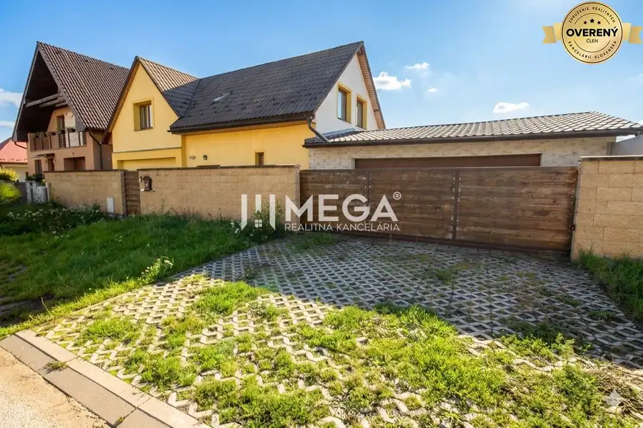
Rodinné domy10 450 000 €VÝRAZNÁ ZĽAVA: Priestranný dvojgeneračný rodinný dom - Valaliky Okolie, Valaliky 6-izbový300 m² Mega realitná kancelária ponúka na predaj priestranný murovaný, zateplený dvojgeneračný rodinný dom s úžitkovou plochou 300 m², ktorý sa nachádza v…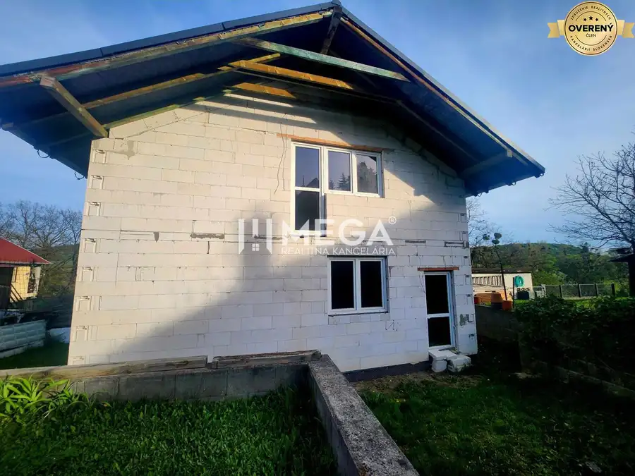
Rodinné domyNové10 Cena dohodouNa predaj uzavretá hrubá stavba RD, Svinica, Košice - okolie Okolie, Svinica 3-izbový162 m² MEGA Realitná kancelária Vám ponúka na predaj rozostavaný dvojpodlažný rodinný dom v štádiu uzavretej hrubej stavby, nachádzajúci sa v pokojnej a…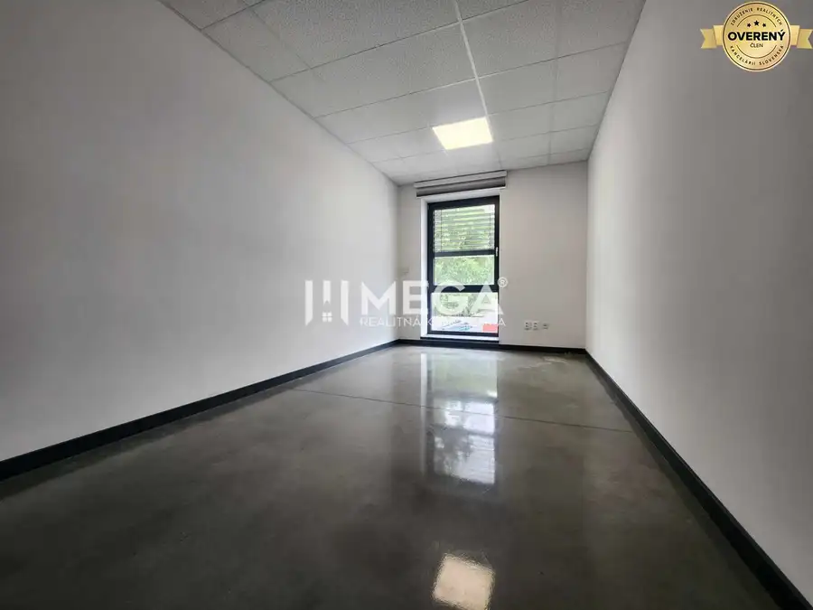
Nebytové priestoryNové7 Cena dohodouNa prenájom reprezentatívna kancelária, Prešov, Strojnícka ul. Prešov 1-izbový14.71 m² MEGA realitná kancelária Vám ponúka na prenájom reprezentatívne a cenovo dostupné kancelárske priestory v Prešove, časť Nižná Šebastová na…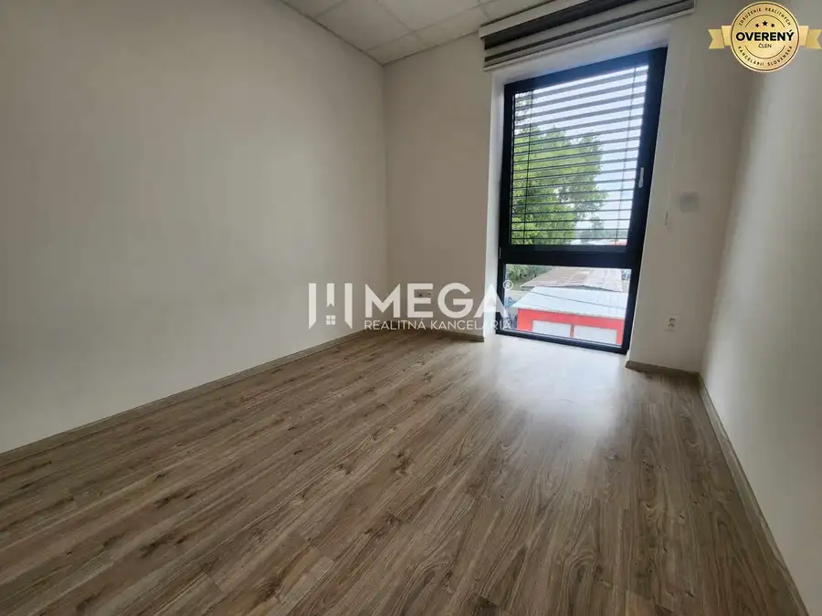
Nebytové priestory7 Cena dohodouNa prenájom moderná kancelária, Prešov, Strojnícka ul. Prešov 1-izbový14.68 m² MEGA realitná kancelária Vám ponúka na prenájom reprezentatívne a cenovo dostupné kancelárske priestory v Prešove, časť Nižná Šebastová na…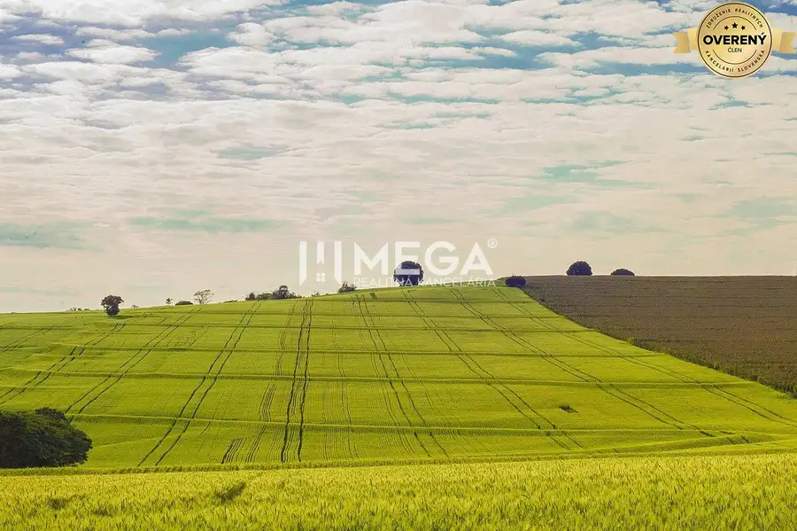
Pozemok Cena dohodouHľadáme pozemok na kúpu v Košiciach Košice 4000 m² MEGA realitná kancelária hľadá pozemok pre klienta v lokalite Košice - Juh, prípadne aj iné mestské časti. Požiadavky klienta: Rozloha pozemku m2…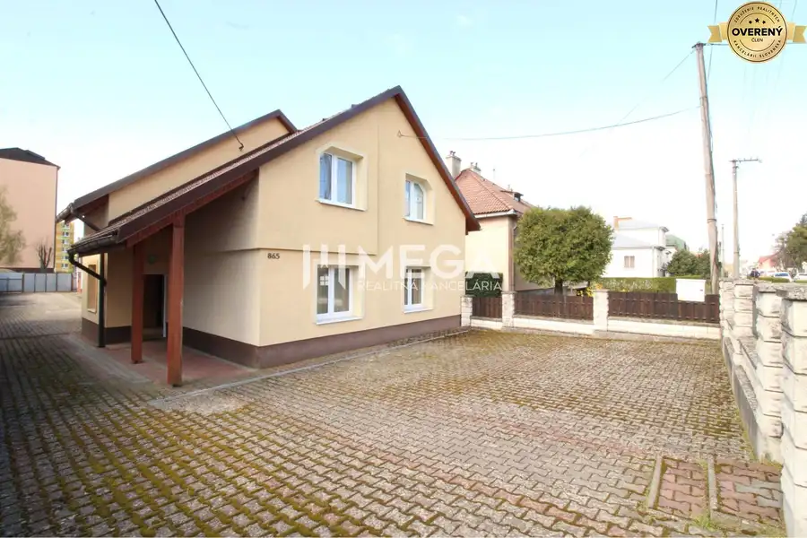
Nebytové priestory10 Cena dohodouNA PREDAJ: Výnimočná nehnuteľnosť vo Vranove nad Topľou Vranov nad Topľou 400 m² MEGA Realitná kancelária Vám predstavuje priestor, ktorý v sebe nesie potenciál byť srdcom vášho podnikania, domovom vašich snov alebo oboma naraz.…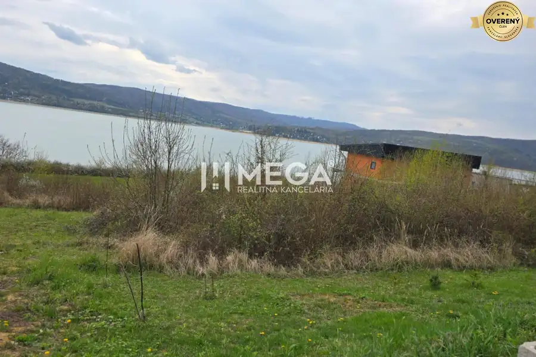
Pozemok3 Cena dohodouNA PREDAJ: Rekreačný pozemok s výhľadom, Domaša – Holčíkovce Holčíkovce 1072 m² MEGA Realitná kancelária ponúka na predaj atraktívny rekreačný pozemok o výmere 1 072 m² v jednej z najvyhľadávanejších lokalít Vodnej nádrže Domaša…Tomuto výberu zatiaľ nezodpovedá žiadna ponuka. Napíšte mi, čo hľadáte.